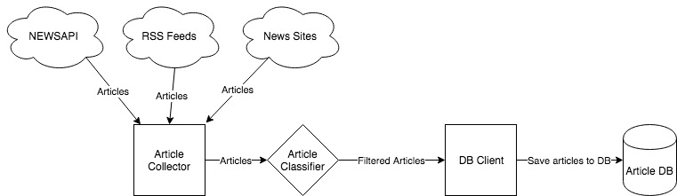
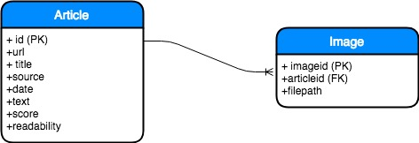
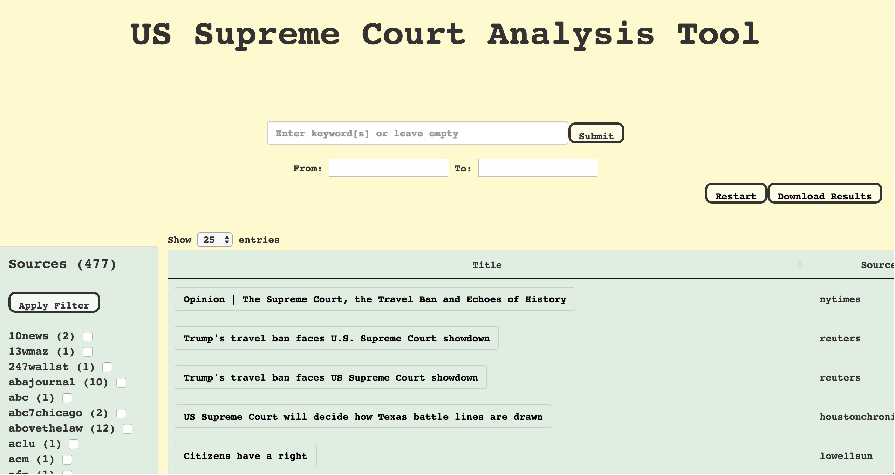
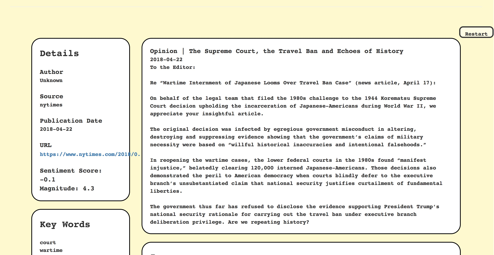

Overview
The requirements for our project are as follows:
- Develop a web application written in html javascript that'll have search functionality via keywords. It only goes through articles we've determined are relevant to the Supreme Court.
- Each article entry inside the database will have columns of data associated with different attributes such as: original link and source information; links to images; text analysis attributes including word count, readability score, sentiment score.
- The above mentioned attributes will be exportable. This will be achieved by implementing a function to output a .csv file with those attributes.
- We will also implement a way to routinely fetch news articles from various news sources. The fetching is done through RSS feeds and NEWSAPI. We've acquired a free API key from NEWSAPI and we intend to implement it's function of searching for news articles that mention a specific topic or keyword. The API has a distinct endpoint which will be especially helpful for us; it is the Everything endpoint, a url (https://newsapi.org/v2/everything) that indexes articles from over 5,000 sources from the past 3 months that have and haven't made breaking news.
- The UI of the application is part of one of the three layers present in the web application. In the visual layer, the UI will present a searchbar with options to set start and end dates for the query. This is similar to the SCOOP project. Once articles are retrieved and presented to the user, there will be a representation with the attributes of the article, mentioned in the second bullet point of this list.
- The other two layers have been introduced already; the data layer corresponds to the database, and the external layer contains the article fetching methods.
- One of our ultimate goals will be to contrive a method to analyze images of articles to identify association with the Supreme Court, using relevant articles' images as a learning tool for future articles tested. This action occurs when determining whether or not to add an article into the database; essentially, we're adding a feature to the learning algorithm, where instead of just using text, images are included.
Environment
Our cutomers expressed to us that our web application needs to be compatible in both Windows and on macOS. Our web application will be written in html javascript [version 1.8.2] with some PHP [version 7.2], which is certainly compatible in both operating systems; it'll be the webpage which the users will access. It's more a question of browser compatibility, but our cutomers didn't mention any browser requirements.
The NEWSAPI [version 0.1.1] functions will be implemented in Python [version 3], and it is simply a choice of preference because it's a language we're all comfortable writing in. However, the main reason we are using Python is becaues of a library called Newspaper3k [version 0.2.6], which includes functions to extract plaintext and metadata from news articles. This is how we will fill the attributes inside the database.
The database will be produced in the MySQL relational database management system. It is also compatible with Windows and macOS.
Modules
- There are four major portions to the project that could be considered modules:
- Article Collector
- Sends Requests for information NEWSAPI
- Sends GET Requests to News websites to get articles
- Sends requests to RSS feeds for latest feeds
- Uses Newpaper 3k library to extract text, images, and metadata from articles
- Sends article text to classifier to determine relevancy
- Article Classifier
- Receives text of given article
- Classifies articles as relevant or not (Simple Boolean decision)
- Database and associated clients that read/write to it
- Database set up with ER diagram below
- Also includes client which allows regularly running script to save articles and metadata to database
- Client also saves images
- User Interface
- Queries the database to display relevant results
- Allows user to set date constraints on searches
- Allows user to see associated images
- Allows user to download list of results as csv
- Article Collector
These are the four high level components of the project. To give a brief summary, the Article Collector is responsible for collecting articles. The classifier determines if these are worthy of being saved into the database. The database and associated client allows for articles deemed relevant to be saved to the database and organized in a orderly fashion. This client will also save article images in a directory on the server for easy retrieval. The user interface is then responsible for querying the database and displaying information to users in a presentable format.
Collector/Classifier Script Overview
The above diagram helps to describe the script that handles the collection, classification, and saving of articles. This script will run on a regular basis, and will have multiple sources of articles. First, the script requests articles from various sources, like NEWSAPI, RSS feeds, and Sections of news websites dedicated to the supreme court. For the first two, no additional work is necessary to get links, texts, and images associated with articles. For the last source, the sections of websites, the script will search for certain html tags in the page that correspond to the article links being shown. Once this is accomplished, the text of the articles is then downloaded, and the text of articles will be sent to the classifier filter out irrelevant results. Once this filtering is done, the list of remaining articles will be saved to the database through a database client that will have functions for easily saving article data and associated metadata, like source, author, date, and date posted. This is a good overview of how the collection process will work.
Database Overview
Above is an ER diagram of the database for article collection. The database is relatively simple, just saving articles and information about associated images. If time permits, this can easily be extended to support saving image and text analysis. Analysis tables can simply be added to reference the article id and image id for text and image analysis, respectively.
User Interface
A large portion of the user interface will be adapted from the previous group's user interface, so the design for this involves ensuring that we make our database compatible with the current user interface of the previous project.
Screenshots
These shots are of the current project, showing the user interfaces for searching the database and viewing individual articles:
This is the top of the search page

The article result page
Use Cases
- Browsing available articles
User pulls up the website, and available articles sorted by date are already available
User can change 'Sort By' to sort by different heuristics
User can change page number to look at older articles
- Searching for a particular article
User pulls up the website
User types a query into the search bar, and may input additional filters to search by
The database processed their query to search through the database for relevant articles
The user's results are returned and displayed to them
- Downloading search results
User pulls up the website and searches for articles using process from B
User clicks the highly visible "Download Results" button
A comma separated list of the query results is created and made available to download to the user